COMPUTATION

Fitts-Woolard
Hall

Madera Cyber
Innovation Center

Wake Tech
Parking Deck

Brooks
Global Studies

Pedestrian
Bridge

UVA Alderman Library
Rennovation
Charlotte
New Main Library
Artificial Intelligence
Dynamo and Grasshopper
Deployment

Project
Data Warehouse

Misc
Work
Fitts-Woolard Hall
3D Wood Wall
Link to Architecture page
This 220,000 sf project is a new engineering building for NC State University, housing the dean of the college of engineering, the civil engineering department, and the structural engineering department. It includes research labs, teaching labs, classrooms, and offices. Computational tools were used to create the focal point for the interior of the building, 2 wood walls at the entrances with the biggest spanning 4 floors measuring 86’ by 50’ meant to visually draw people up into the building. Inspired by the work of the departments, images from their research were used to create the underlying form.The form generated the 50, 4-sided flat panels that were arranged into large repeating triangles. Aggressive cost targets were met by repeating each panel at least 6 times and not exceeding a maximum panel size. The resulting design was digitally transmitted to the fabricator for production.


Monumental Stairs
I created a computational approach for moving geometry between the design softwares for the design of the monumental stairs at Fitts-Woolard hall. There are 5 unique sets of stairs, all configured differently, bending to maximize the penetration of the sunlight from the skylight at the top of each run. The engineer used the traditional workflow of manually modeling for 2 of the stairs and the computational approach for the remaining 3. The engineer stated that the new process saved around a day of time for the more simple stairs, and around 3 days of time for the winding stair. An estimated 7 days of time would have been saved if the process was used on all 5 stairs. Later on it was even identified that one of the manually input stairs offset the members on the wrong side of the reference line, resulting in a stair that was 6” too narrow and needed to be fixed.
Read the paper about the process for the structural stair process titled "A Workflow for Iterative Designing and Structural Analysis of Complex Forms" here. 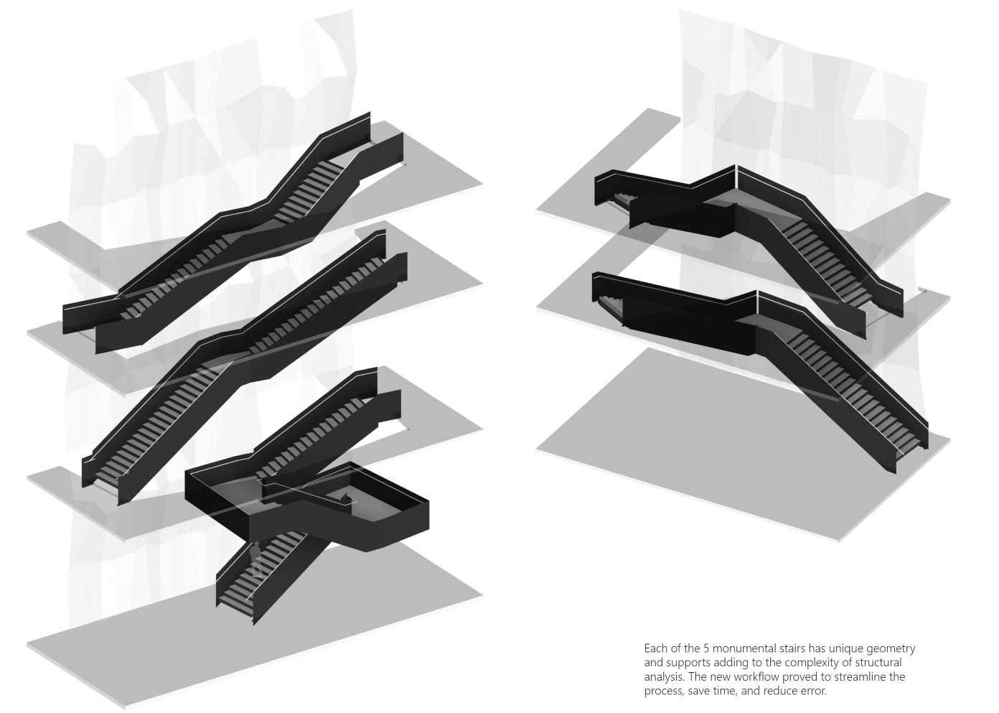
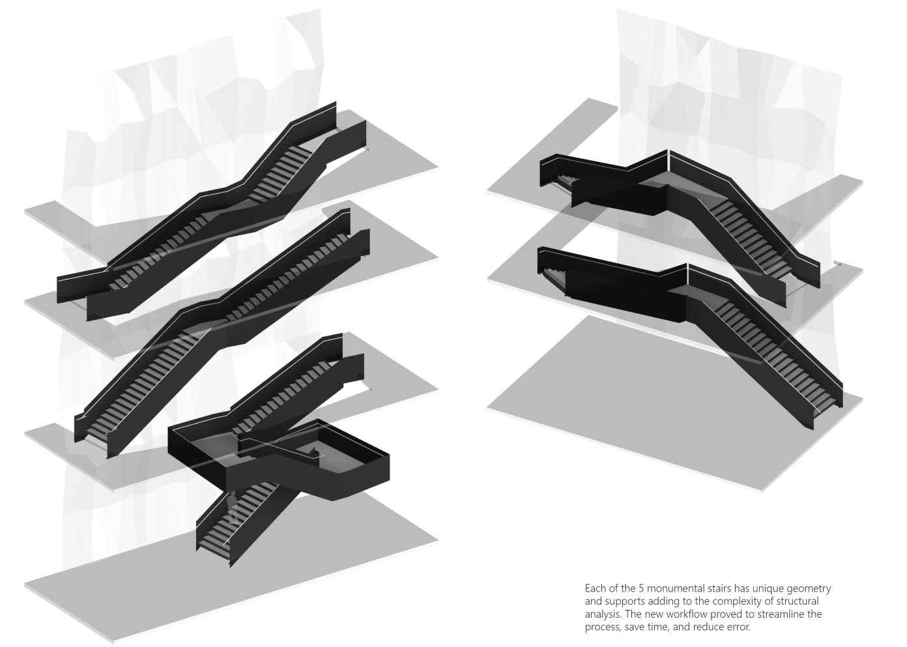
Misc
For Fitts-Woolard Hall I was involved from the programming phase through closeout and ustilized comutational thinking throught to improve processes and the design. During Programming, I developed a database to track and validate programming requirements throughout the design process. In the design phase, computational design was used to calculate daylighting, energy usage, and a dynamic window layout on the exterior. As the main Architectural representative on the project, during CA the data from the contractor was linked to a floor plan to quickly illustrate where the design team needed to work that day. My scope of work also included me being the LEED accredited professional helping the project achieve LEED Silver, and the first LEED v4 project for our company.
 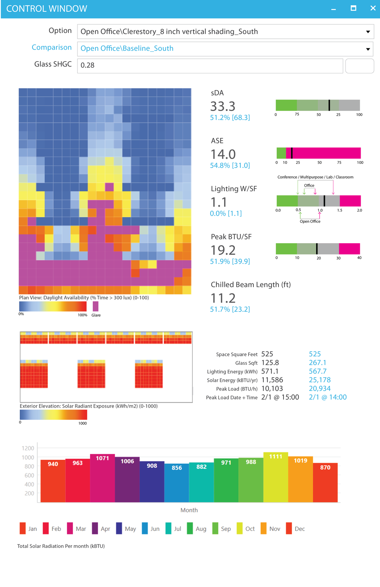
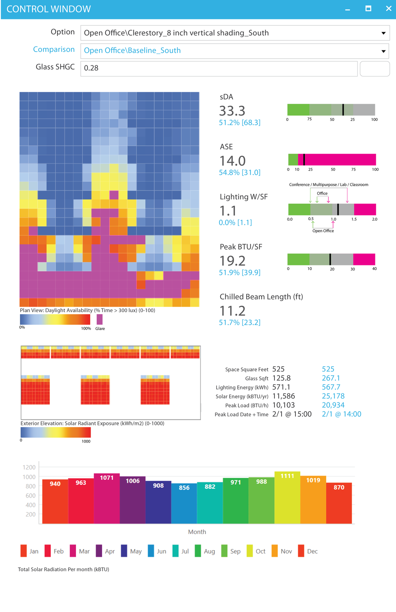
Madera Cyber Innovation Center
Freeform Stair
At the Madera Cyber Innovation Center at the U.S. Air Force Academy, I was brought onto the project specifically for my computational design expertise when traditional design approaches proved insufficient. While the client desired a spiral stair to maintain consistency with the Academy's architectural language, the building's constraints and program requirements made conventional spiral geometry impossible. This challenge required a computational approach to resolve the complex geometric relationships between form, structure, and fabrication requirements.
As the computational designer and architect, I developed a solution that married form and function through advanced digital tools. The resulting freeform stair design required precise coordination of multiple complex systems - from the cast-in-place concrete structure to the custom curved glass guardrail system comprising 94 panels, 69 of which were unique shapes. Working closely with structural engineers, I ensured the stair's dramatic form maintained its freestanding structural integrity while meeting all building codes.
Beyond the geometric solution, I provided comprehensive turnkey services including all detailing and documentation. The project relied heavily on detailed 3D modeling and close collaboration with fabricators. These models served as direct input for concrete formwork construction and guided the manufacturing of the custom glass panels, each meeting strict bending fabrication requirements. My involvement extended from initial concept through complete documentation and construction administration, ensuring the precise execution of this architectural element that enhances the building's entrance atrium while meeting all functional requirements.
Check out the Clark Nexsen blog post I wrote for more detail.
 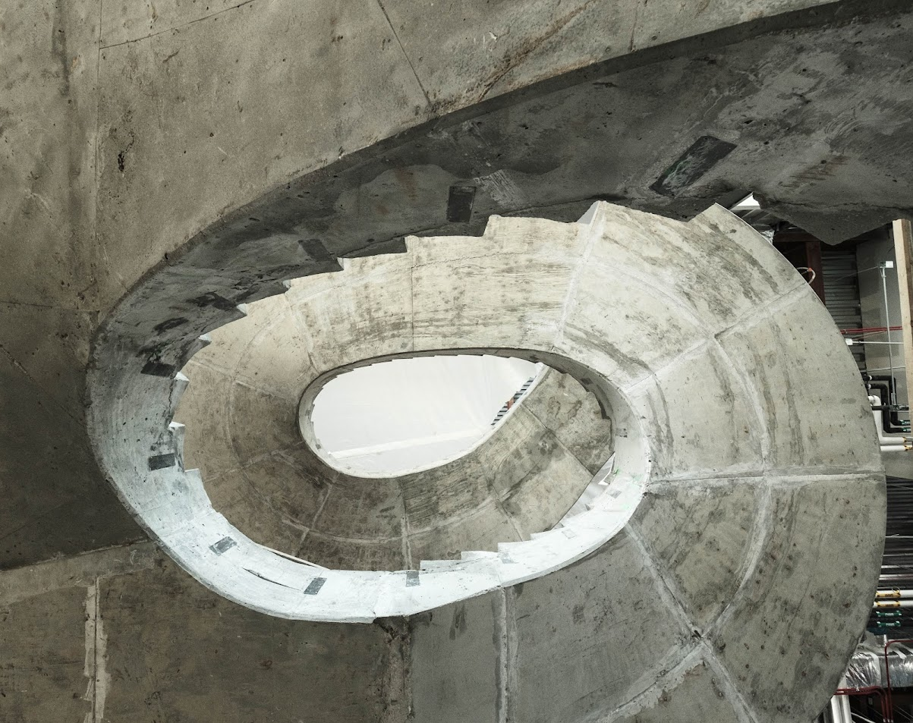
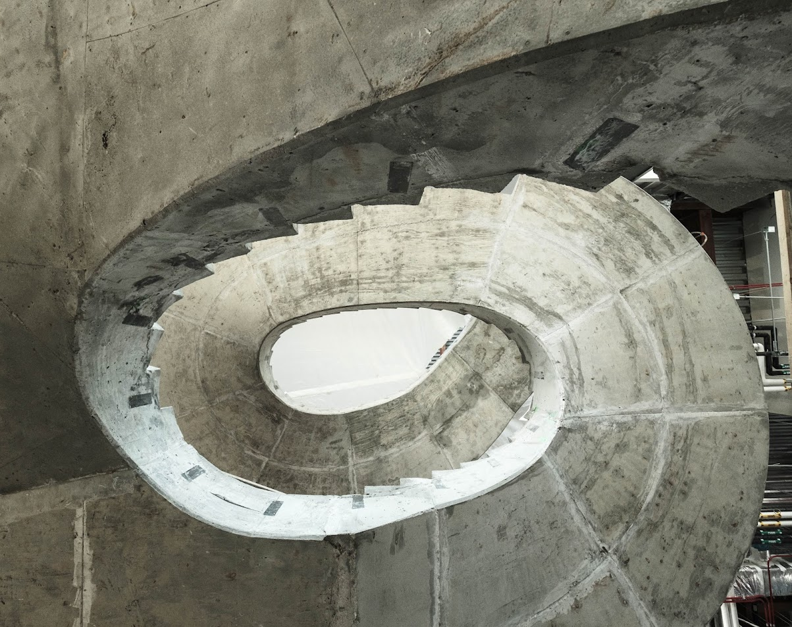
 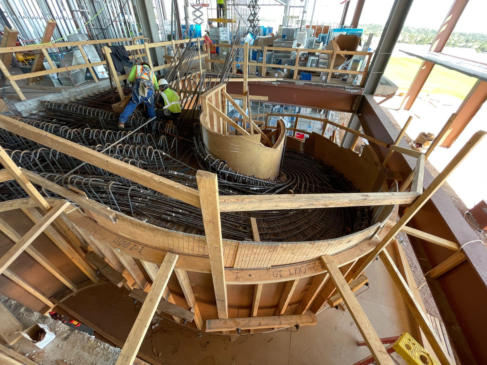
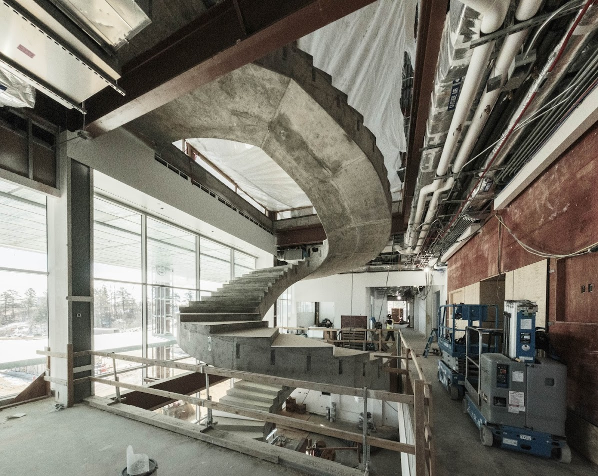
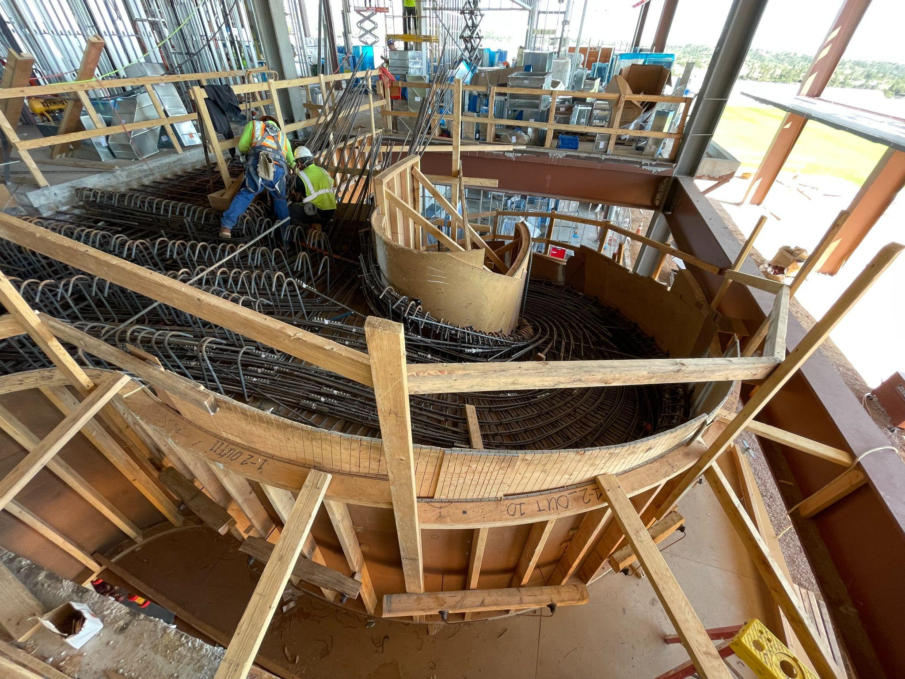
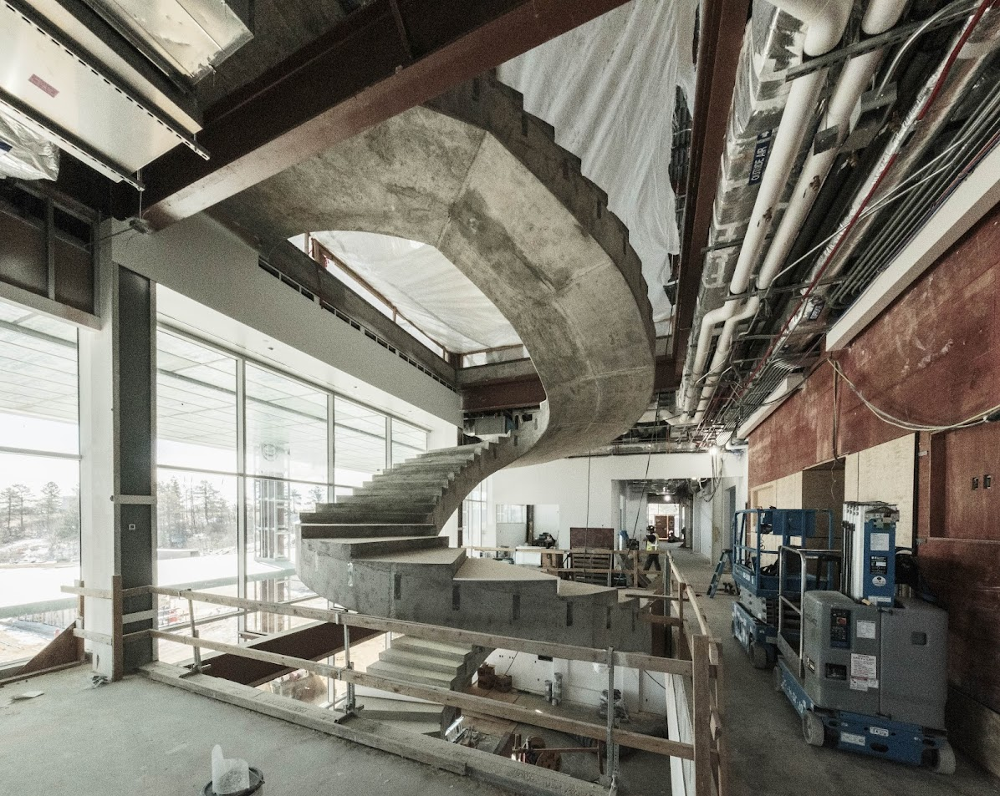

Wake Tech Parking Deck
Stainless steel facade panels
Link to Architecture pageThe Wake Tech campus is split by a natural wetland and forest. The site for the deck is located directly on one edge of the forest. All students commute to campus, requiring ample parking and large parking decks. For this project, the facade is 350 feet long so the traditional ideas were not working for the design team. The idea was to create a textured pattern on the facade that would reflect and respond to the site. The team liked the idea of creating panels that reflected the surroundings at different angles to create a dynamic appearance as you drove along the deck. The resulting design arranged panels in a way that created a texture by only varying the panel spacing and the panel orientation. The script first generated a single panel profile that could be bent from a roll of stainless steel. These panels could then be rotated 180 degrees to add to the desired texture. The design bid under budget, however the owner wanted the facade budget cut in half. Fortunately since the design was done using computational tools, we quickly studied options with half the panels removed. With computation this redesign was done in a few days instead of a few weeks using the traditional process. This was the first major project done at Clark Nexsen using computation and this redesign process showed the power of the tool and led to more projects using computation design.


CNC supergraphic numbers
The design team liked the approach of having supergraphic numbers on each floor at the stairs. Computational and non-computatal designs were studied with the team liking the direction of the computational schemes. Working with the CM, various fabrication methods were studied, eventually landing on CNC ACM panels for their cost and durability. Over 35,000 holes were drilled to create the graphics on the panels. Working with the contractor, we looked at drilling partially or fully through the panels. Studies were completed to determine if the holes went just into the core of the ACM or if they went all the way through the entire panel. The contractor recommended using thru-holes since they could produce it faster and more accurately.


Pedestrian Bridge
Mirrored Panel Glare Analysis
Unbuilt
The design team approached me with a question they couldn't answer. The designers wanted to install reflective metal panels on a pedestrian bridge so that it would become invisible, reflecting the sky and the landscape. However there was concern that the bridge would create hotspots on the surrounding landscape, or even worse be a source of glare for pedestrians on the site, or add glare/heat gain on surrounding buildings. There was no tool to answer this question, so a custom script was created to understand where the hotspots would be at certain times and days. Ultimately the team decided that the times of glare were very limited and proceeded with the scheme.


UVA Alderman Library Rennovation
Skylight geometry design and optimization
Unbuilt
The renovation for the alderman library built in 1938 called for putting a skylight in the lightwell to provide more space in the library. The main entrance to the library is up on the third floor overlooking the lightwells. The design team wanted the skylight to be as low as possible so it's not visible outside the windows from the entrance. The design team wanted to contrast the historic building with a modern pillow shaped skylight which also allowed for a low profile to be achieved. Working with the skylight manufacturer, a design was established that met all the requirements such as minimum depth and minimum slope for drainage. The resulting skylight was only 4’ deep and had a soft curving appearance and was well received by the client. Ultimately the skylight was changed to an alternate in the Bid and was not accepted.


Brooks Global Studies
Supergraphic
Under Construction
Part of my job is to teach people how to use computational tools. A project member approached me with an idea to use icons placed on glass to create a supergraphic but didnt know how to accomplish it. Over several multi-hour phone calls, I taught them how to create the design they were after. Eventually they didn't have the time to finish the design, so working with them I refined it and created the final piece to deliver to the printer. The final design featured 23,745 icons over the 84’ length made up of 21 icons. This design was the result of a VE exercise that removed some 3D casework lettering inside the building. After the supergraphic was complete, several team members said that this was an improvement over the original concept that this replaced.

 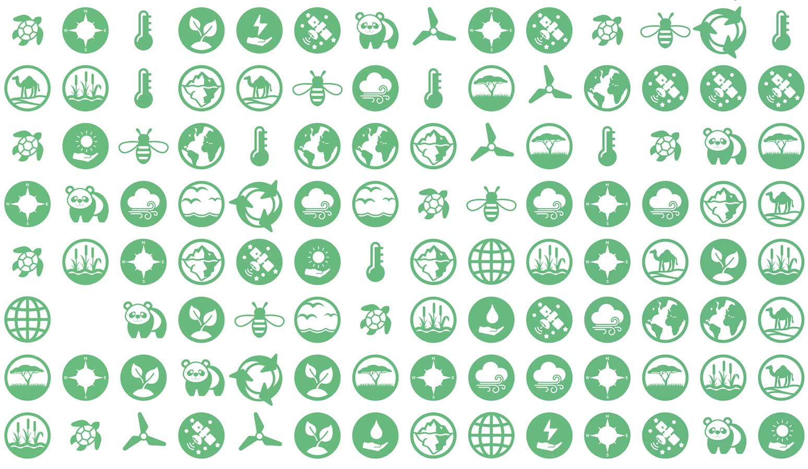
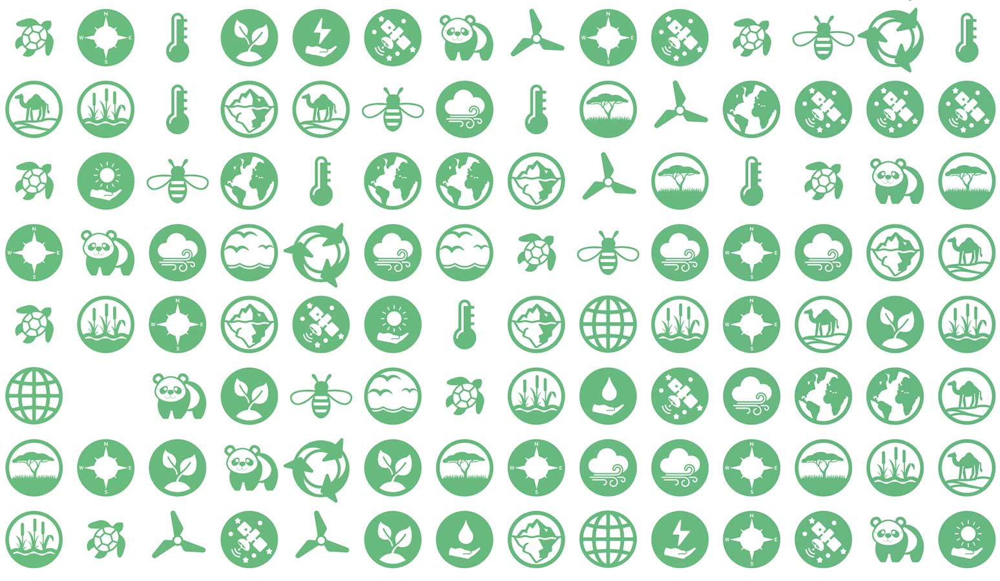
Charlotte New Main Library
Facade Refinement
In Design
This project is the new main library in downtown Charlotte where they are replacing the old facility with a new one. The new building focuses on the public as well as new role and responsibilities that libraries have in their communities. As the Architect of Record working with Snohetta, my involvement began in late Design Development. The design concepts are generated by their team and handed off to me to either refine or create new scripts. Refinements are based on code requirements, changes in CD as the products and pricing are refined, etc. In the case of the curved bowl facade, I modified the script to change elevations of horizontal mullions and create new curving horizontal mullion options as part of a VE studies. For the metal panels that are on the curved bowl and also on all other sides of the building, I created a script to study the quantity, pattern, and mix of the 3 metal panel colors. Other scope of work for this project includes geometry coordination between Revit and Rhino where Speckle and Rhino.Inside is used to update the models as needed for the entire design team.
Atrium and Stair Refinement
Similar to the exterior, the design for the atrium was generated by Snohetta, and passed off to me to refine. In the case of the atrium stairs and guardrail, the railing design changed from glass to wood pickets. I created a script that generates the wood pickets while also revising the stair geometry to meet all the constraints of structure, layout, code, and aesthetics.
SE Facade Graphic
The southeast facade of the project, situated on the interior block and facing a future tower and plaza, presented an opportunity to integrate computational design into a highly visible graphic element. The facade, approximately 130 feet tall and 85 feet wide, features a design that occupies half its surface area. Based on the initial design intent provided by Snøhetta, I developed the final graphic, consisting of over 750,000 circles in four colors, and delivered it to the fabricator for production. The primary challenge lay in the computational complexity of generating these points. Traditional methods required over four hours to run the script, which would have made iteration impossible. By leveraging AI-driven tools, I reduced the generation time to just 15 minutes while preserving the original density and design intent. This efficiency not only streamlined production but also demonstrated the value of integrating advanced computational approaches into architectural workflows.
Loading Enclosures
Originally, the design included an underground loading dock for the new library and Spirit Square, shared with an adjacent high-rise, with a public plaza above. However, late in the design process, the tower developer withdrew, making the underground loading dock unfeasible. Due to the urban site constraints, the loading docks for both buildings were relocated to the plaza, necessitating careful integration to screen dumpsters and semi-truck trailers while providing cover for loading and unloading activities.
Collaborating with Snøhetta’s design intent for corten steel screen walls and canopies, I developed and rationalized the final design. This involved coordinating with all disciplines to create detailed documentation for the enclosures and canopies, ensuring structural and functional requirements were met. The panels featured a custom perforation and dimple pattern, which I designed parametrically to align with the architectural intent while optimizing for fabrication. This solution balanced aesthetic quality with urban practicality, enhancing the functionality of the shared plaza space.
Dynamo and Grasshopper Deployment
Part of my job is to help create automations for the firm to alleviate pain points. 35 scripts have been deployed to the firm that require no knowledge of Dynamo or Grasshopper. To date 1,600 scripts have been run modifying 52,000 elements. Usage has doubled year over year since I started 3 years ago. Each script run is tracked in the Data Warehouse where I have a PowerBi report to visualize usage. The visualization not only helps drive what scripts are created based on what types of scripts get the most use but also helps understand adoption across the firm. Since the usage is tracked in the data warehouse, automations can be triggered. For example, I receive a Teams notification every time that a script is run which has 2 benefits: If I don't recognize the person's name that has run it, I usually reach out to them and make sure that they are happy with it and ask if they have any questions. It often leads to a great conversation and increased usage. The second benefit is that I can tell if a script didn't work properly and send an automated message to the user with a link to the documentation for that script. I also usually reach out to them and check in to see what happened.


Project Data Warehouse
I was part of the small team responsible for gathering and submitting the data for the AIA2030 Challenge. From this process, I saw the need for us to house our data in a centralized and open platform that everyone could access and created and led a team to accomplish this goal. Starting in 2018, I regularly meet with the Director of IT and our Database Developer to feed work to the Database Developer to develop the concept of the Data Warehouse to hold all our design data. The data is accessible to the entire firm primarily via PowerBI. Over the next 6 years, more and more data from various sources have been added to this warehouse. Eventually it led to the creation of the Project Information Database, a place where staff can enter data into the data warehouse. The primary use of it is around the AIA2030 data and the SE2050 data collection. But it is also displaying data from various sources such as Deltek Vision. The Warehouse is made up of over 100 tables from over a dozen data sources.

Misc Work
AIA TAP National Advisory Group 2020 Chair
2017-2022. I served on the leadership group for the AIA Technology in Architectural Practice Knowledge Community (TAP). Responsibilities included chairing the 2020 Building Connections Congress conference and the 2021 national AIA Innovation awards. Other involvement included advising the AIA Strategic Council, and serving on various task forces such as the national AIA COVID-19 task force. TAP serves as a resource for AIA members, the profession, and the public in the deployment of computer technology in the practice of architecture. Technology in Architectural Practice monitors the development of computer technology and its impact on architecture practice and the entire building life cycle, including design, construction, facility management, and retirement or reuse.
Link to the AIA TAP websitePebble Smart-watch App
I like minimal watch faces on my Pebble Smart-watch. The issue with these is they do not show the date and the pebble OS didn't have an easy way to simply show the date. I hacked together some code and created an app for the Pebble Appstore that does just that. It shoes the date when you hit one of the buttons on the side of the watch. Various visual aspects of the app are customizable through your smart phone

Who We Are: Javascript image
I created a Script that took employee data from our employee database and images from our image database and created a graphic of the faces of our entire firm. At the time of it's creation, our multi-office firm was attempting to feel more cohesive and people also found it fun to try to find themselves in the image. The script allows for a strong amount of customization such as the order of images and color borders representing office location or discipline.

Intranet Restructuring
I was involved with a small team to improve our company's Intranet. The previous Intranet was confusing, unregulated and all the information was outdated. Our group took the existing Intranet and pared it down immensely. It became easier to find what was needed as well as an easier place to share knowledge. The result is more engagement across the firm, the information in the libraries is more relevant, staff know where find information, as well as who to contact if things are outdated or missing. Our group is still involved in encouraging people to post and contribute to the Intranet. As a result, the amount of posts, content, and most importantly, the quality have all increased. Our firm was asked to present our redesign to at a conference put on by Knowledge Architecture.


LEED Complexity Diagram
I set out to create a interactive diagram that showed the complexity and relationship of the LEED v4 points. I used a data visualization tool and then packaged it up for the web so that it could be shared.
Check out the interactive graphic
Clark Nexsen Holiday Graphic
Marketing approached me to create the Clark Nexsen holiday graphic to send to clients and use on social media.
Here is a Link to an article where we discuss the process of making the animation.

CANstruction
I created a Grasshopper script to rapidly visualize and iterate the design for the CANStruction fund raising event. We partnered with RedHat, a tech company, so I wanted to implement as much technology as possible. The script allowed for the form and can heights to be input and it would then generate a visualization of the final result including can count. After the design was completed and sent to the CNC fabricator, the quote was too high because it was slightly wider than the material provided. A quick reduction in the size of the underlying form generated a new output that used 21 less sheets and saved over $1,000 in labor. Without parametric scripting the entire drawings would have had to be redone.
Here is a Link to an article I wrote for Clark Nexsen's website.


Artificial Intelligence
Clark Nexsen AI Strategy
The development of Clark Nexsen's AI strategy framework began with a firm-wide survey to understand existing AI knowledge, concerns, and opportunities across all departments. Based on these survey results, I developed and delivered a series of presentations to address identified knowledge gaps and establish common ground for AI discussions within the firm. As part of the AI Innovation Hub, I then led the creation of our implementation approach, establishing a central system for evaluating AI tools and creating channels for ongoing technology discussion. This initial phase focused on building consensus and understanding how different departments could benefit from AI integration in their workflows.
Building on this foundation, I worked with firm leadership to develop a three-tier framework of Guidelines, Best Practices, and AI Labels for individual tools. The process included researching policies from peer firms, analyzing potential risks, and studying implementation strategies across the AEC industry. This research informed the development of a comprehensive risk assessment matrix and the creation of a strategic roadmap using PERT methodology to outline implementation phases and dependencies. These components were synthesized into the final AI strategy document, which establishes clear objectives, defines governance structures, and sets measurable targets for AI implementation. The resulting framework provides Clark Nexsen with a detailed roadmap for AI integration over the next several years, balancing innovation opportunities with practical implementation steps across all departments.
AI Toolkit
Recognizing the need to bridge emerging technologies with practical architectural workflows, I developed an innovative AI Toolkit that transforms how our firm integrates AI into design processes. The toolkit addresses real-world challenges by automating time-intensive tasks like analyzing drawing notes, meeting recordings, and communications, ultimately enhancing decision-making and quality control. It also streamlines the creation of RFPs through a custom retrieval-augmented generation (RAG) system, ensuring AI-generated responses are grounded in our firm’s unique data and expertise.
Built on a foundation of multiple AI models, including OpenAI's GPT-4 and Anthropic's Claude, the system incorporates thoughtfully engineered prompts to make AI tools approachable for staff, fostering a gradual and confident adoption of this technology. The Django-based web interface I designed provides seamless access to specialized modules for drawing analysis, specification comparison, and automated quality control.
By automating critical workflows and integrating AI into familiar contexts, this toolkit accelerates decision-making, strengthens quality control, and prepares our firm for the next generation of AI-powered design tools
Brooks Global Studies
Discover Graphic
For the 'Discover' graphic at Brooks Global Studies Elementary School, I applied my expertise in computational design to translate a complex design concept into a functional architectural feature. The challenge was to arrange 16 unique icons into a legible and artistic composition without the thousands of hours of manual labor it would typically require. As the computational designer, I developed a custom algorithm to automate this process entirely.
The script I created managed multiple parameters simultaneously, generating a seamless green-to-blue color gradient across the icons while strategically increasing their density at the letters' edges to create clear definition. This process not only made the design feasible but also embedded functionality into the art. The graphic serves as an inspiring focal point for students, a screen for outdoor views, and an effective sun-shading element, demonstrating how computational design can efficiently create solutions that are at once beautiful, practical, and meaningful.
Part of my role is to teach people how to use computational tools. A project member approached me with an idea to use icons placed on glass to create a supergraphic but didnt know how to accomplish it. Over several multi-hour phone calls, I taught them how to create the design they were after. Eventually they didn't have the time to finish the design, so working with them I refined it and created the final piece to deliver to the printer. The final design featured 23,745 icons over the 84’ length made up of 21 icons. This design was the result of a VE exercise that removed some 3D casework lettering inside the building. After the supergraphic was complete, several team members said that this was an improvement over the original concept that this replaced.
Check out the Clark Nexsen blog post here for more detail.
Photos © , Tzu Chen Photography

 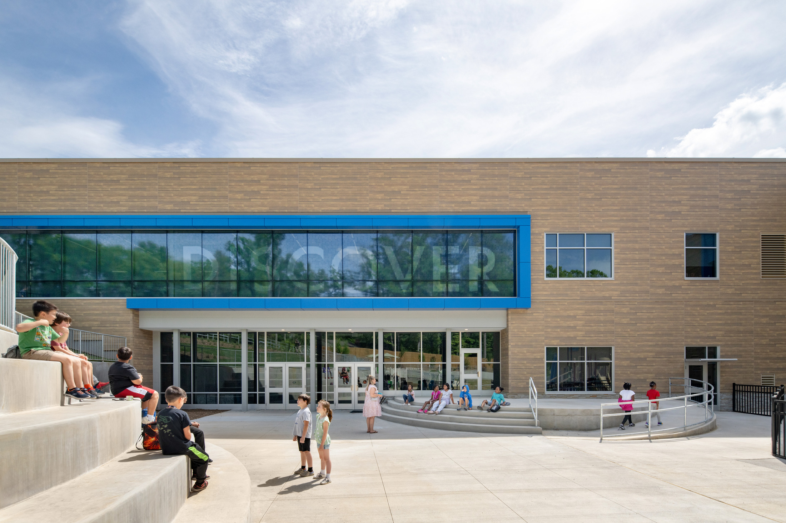
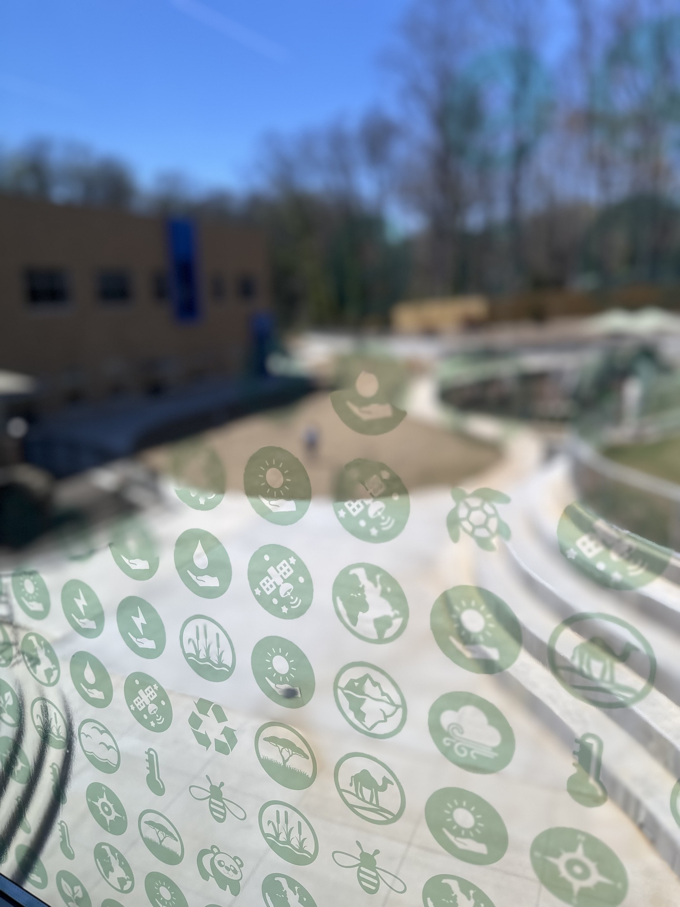
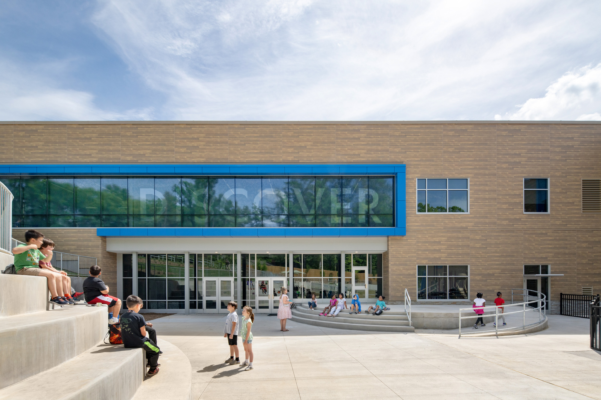
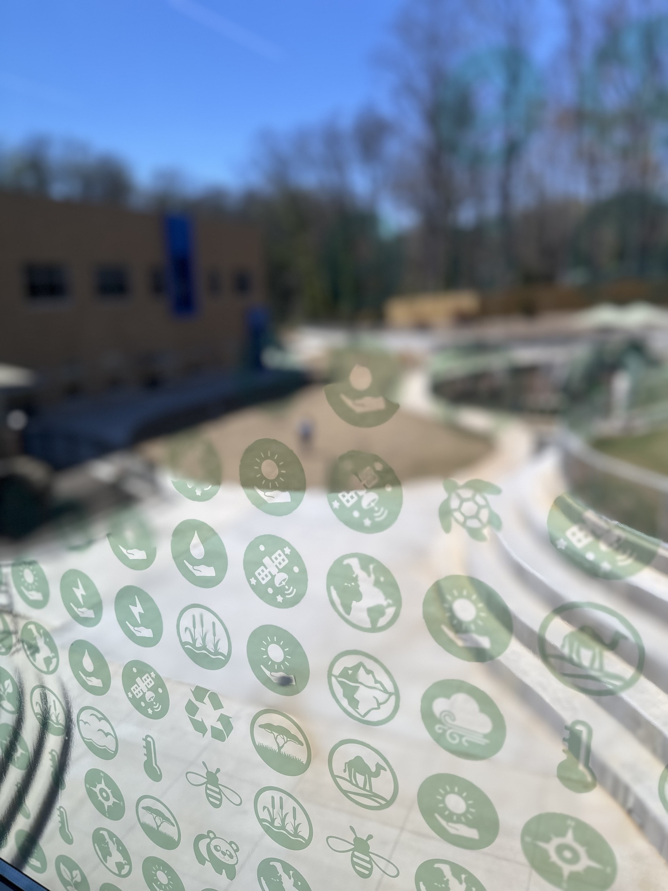